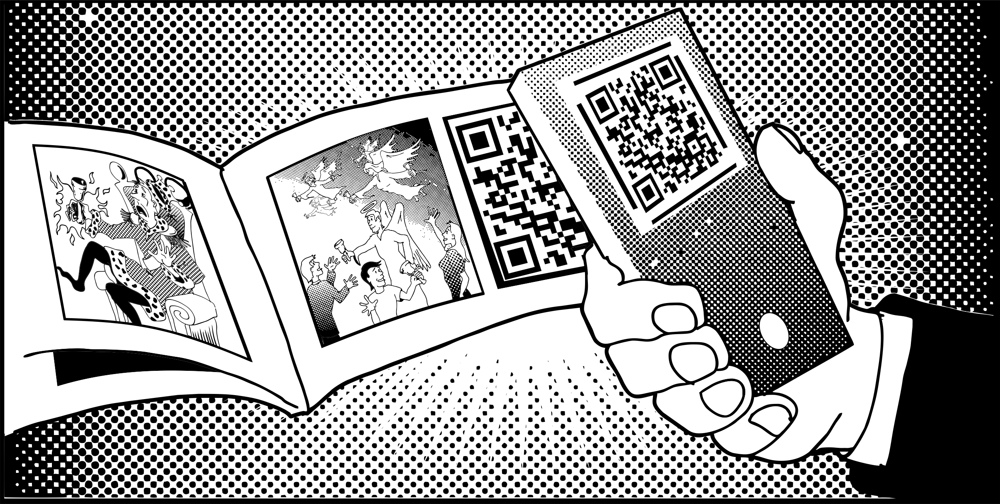

You have been given a bell

Your phone, press, node, key, local server, copy of the source, and ability to pass an artifact to another person are all bells.
Decentralization does not decide what you should say or build. It changes who must grant permission before the act is technically possible.
That is why the moral problem does not disappear with the gatekeeper.
The bell can call people toward beer, fear, freedom, noise, fraud, evidence, art, or another king.
The capability is the beginning of responsibility, not the end of it.